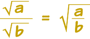

Simplifying Square Roots
To simplify a square root: make the number inside the square root as small as possible (but still a whole number):
Example: √12 is simpler as 2√3
Get your calculator and check if you want: they are both the same value!
Here is the rule: when a and b are not negative
And here is how to use it:
Example: simplify √12
12 is 4 times 3:
Use the rule:
And the square root of 4 is 2:
So √12 is simpler as 2√3
Another example:
Example: simplify √8
(Because the square root of 4 is 2)
And another:
Example: simplify √18
√18 = √(9 × 2) = √9 × √2 = 3√2
It often helps to factor the numbers (into prime numbers is best):
Example: simplify √6 × √15
First we can combine the two numbers:
Then we factor them:
Then we see two 3s, and decide to "pull them out":
Fractions
There is a similar rule for fractions:

Example: simplify √30 / √10
First we can combine the two numbers:
Then simplify:
Some Harder Examples
Example: simplify √20 × √5√2
See if you can follow the steps:
Example: simplify 2√12 + 9√3
First simplify 2√12:
Now both terms have √3, we can add them:
Surds
Note: a root we can't simplify further is called a Surd. So √3 is a surd. But √4 = 2 is not a surd.